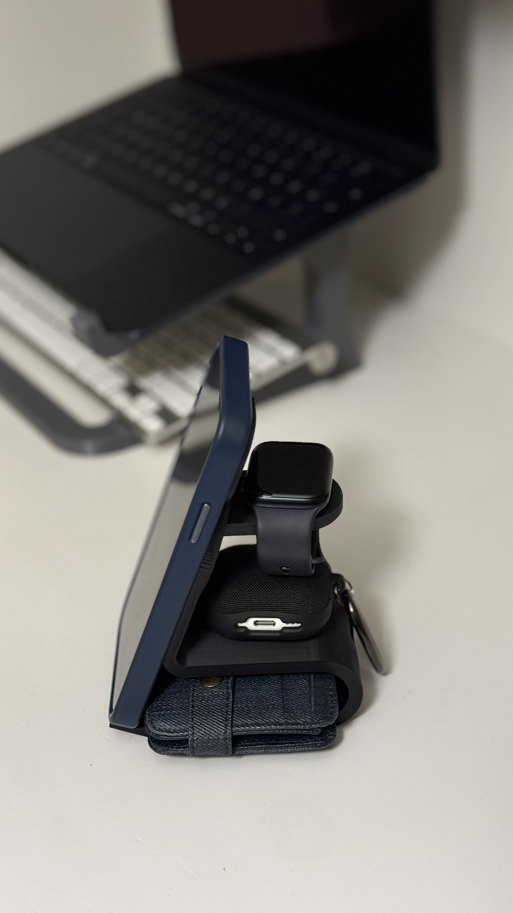

×
Telefon Standı
Açıklama
Bu telefon standı telefon, kulaklık, saat gibi cihazlarınızı şarj ederek tek bir stantta toplar.
Dağınıklığı önler ve şık bir görünüm sağlar.
Fotoğraf

Standın genel görünümü.
İnceleme Videosu
Dosyalar
Baskı almak için gerekli 3MF dosyalarını aşağıdan indirebilirsiniz.